Exercise 237： Let CABD be a cyclic quadrilateral, AB intersects CD at O. AO⊥DB. Prove that AC⊥DO.
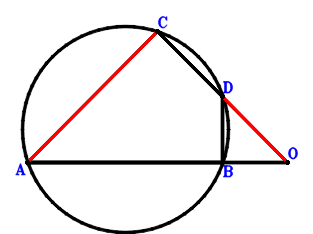
\(\because \) CABD is a cyclic quadrilateral, AB intersects CD at O \(\therefore \small\overrightarrow{OA} \cdot \small\overrightarrow{OB} - \small\overrightarrow{OC} \cdot \small\overrightarrow{OD}=0\) . . . . . . \(①\)\(\because \) AO⊥DB \(\therefore \small\overrightarrow{BD} \cdot \small\overrightarrow{OA}=\small\overrightarrow{OA} \cdot \left(- \small\overrightarrow{OB} + \small\overrightarrow{OD}\right)=- \small\overrightarrow{OA} \cdot \small\overrightarrow{OB} + \small\overrightarrow{OA} \cdot \small\overrightarrow{OD}=0\) . . . . . . \(②\)In conclusion, \(\small\overrightarrow{CA} \cdot \small\overrightarrow{OD}=\small\overrightarrow{OD} \cdot \left(\small\overrightarrow{OA} - \small\overrightarrow{OC}\right)=\small\overrightarrow{OA} \cdot \small\overrightarrow{OD} - \small\overrightarrow{OC} \cdot \small\overrightarrow{OD}=①+②=0\), that is, AC⊥DO.
Exercise 358： Let F, E be the midpoints of CO, CD, respectively. AO⊥BD and CO⊥EF. Given that B, A, O are collinear and AC//DO, prove that \(AC·DO=AO·BO\).
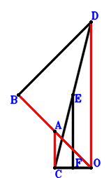
\(\because \) E is the midpoint of CD \(\therefore \small\overrightarrow{OE}=\dfrac{\small\overrightarrow{OC}}{2} + \dfrac{\small\overrightarrow{OD}}{2}\).\(\because \) F is the midpoint of CO \(\therefore \small\overrightarrow{OF}=\dfrac{\small\overrightarrow{OC}}{2}\).\(\because \) CO⊥EF \(\therefore \small\overrightarrow{EF} \cdot \small\overrightarrow{OC}=\small\overrightarrow{OC} \cdot \left(- \small\overrightarrow{OE} + \small\overrightarrow{OF}\right)=- \dfrac{\small\overrightarrow{OC} \cdot \small\overrightarrow{OD}}{2}=0\) . . . . . . \(①\)\(\because \) AO⊥BD \(\therefore \small\overrightarrow{BD} \cdot \small\overrightarrow{OA}=\small\overrightarrow{OA} \cdot \left(- \small\overrightarrow{OB} + \small\overrightarrow{OD}\right)=- \small\overrightarrow{OA} \cdot \small\overrightarrow{OB} + \small\overrightarrow{OA} \cdot \small\overrightarrow{OD}=0\) . . . . . . \(②\)In conclusion, \(- \small\overrightarrow{CA} \cdot \small\overrightarrow{OD} + \small\overrightarrow{OA} \cdot \small\overrightarrow{OB}=\small\overrightarrow{OA} \cdot \small\overrightarrow{OB} - \small\overrightarrow{OD} \cdot \left(\small\overrightarrow{OA} - \small\overrightarrow{OC}\right)=\small\overrightarrow{OA} \cdot \small\overrightarrow{OB} - \small\overrightarrow{OA} \cdot \small\overrightarrow{OD} + \small\overrightarrow{OC} \cdot \small\overrightarrow{OD}=-2\cdot①-②=0\)\(\because\) B, A, O are collinear and AC//DO \(\therefore\) \(AC·DO=AO·BO\).
Exercise 508： Let F, E be the midpoints of BA, BO, respectively. AC⊥DO and EF⊥BO. Given that D, O, C are collinear and OA//DB, prove that \(DB·OA=DO·OC\).
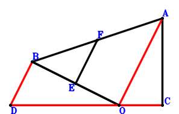
\(\because \) E is the midpoint of BO \(\therefore \small\overrightarrow{OE}=\dfrac{\small\overrightarrow{OB}}{2}\).\(\because \) F is the midpoint of BA \(\therefore \small\overrightarrow{OF}=\dfrac{\small\overrightarrow{OA}}{2} + \dfrac{\small\overrightarrow{OB}}{2}\).\(\because \) AC⊥DO \(\therefore \small\overrightarrow{CA} \cdot \small\overrightarrow{OD}=\small\overrightarrow{OD} \cdot \left(\small\overrightarrow{OA} - \small\overrightarrow{OC}\right)=\small\overrightarrow{OA} \cdot \small\overrightarrow{OD} - \small\overrightarrow{OC} \cdot \small\overrightarrow{OD}=0\) . . . . . . \(①\)\(\because \) EF⊥BO \(\therefore \small\overrightarrow{EF} \cdot \small\overrightarrow{OB}=\small\overrightarrow{OB} \cdot \left(- \small\overrightarrow{OE} + \small\overrightarrow{OF}\right)=\dfrac{\small\overrightarrow{OA} \cdot \small\overrightarrow{OB}}{2}=0\) . . . . . . \(②\)In conclusion, \(\small\overrightarrow{BD} \cdot \small\overrightarrow{OA} + \small\overrightarrow{DO} \cdot \small\overrightarrow{OC}=\small\overrightarrow{OA} \cdot \left(- \small\overrightarrow{OB} + \small\overrightarrow{OD}\right) - \small\overrightarrow{OC} \cdot \small\overrightarrow{OD}=- \small\overrightarrow{OA} \cdot \small\overrightarrow{OB} + \small\overrightarrow{OA} \cdot \small\overrightarrow{OD} - \small\overrightarrow{OC} \cdot \small\overrightarrow{OD}=①-2\cdot②=0\)\(\because\) D, O, C are collinear and OA//DB \(\therefore\) \(DB·OA=DO·OC\).
Exercise 654： Let F, E be the midpoints of CO, CD, respectively. CO⊥FE and AO⊥OB. Given that AC//OD and AO//BD, prove that \(AC·OD=AO·BD\).
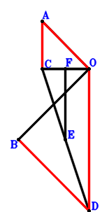
\(\because \) E is the midpoint of CD \(\therefore \small\overrightarrow{OE}=\dfrac{\small\overrightarrow{OC}}{2} + \dfrac{\small\overrightarrow{OD}}{2}\).\(\because \) F is the midpoint of CO \(\therefore \small\overrightarrow{OF}=\dfrac{\small\overrightarrow{OC}}{2}\).\(\because \) AO⊥OB \(\therefore \small\overrightarrow{OA} \cdot \small\overrightarrow{OB}=0\) . . . . . . \(①\)\(\because \) CO⊥FE \(\therefore \small\overrightarrow{EF} \cdot \small\overrightarrow{OC}=\small\overrightarrow{OC} \cdot \left(- \small\overrightarrow{OE} + \small\overrightarrow{OF}\right)=- \dfrac{\small\overrightarrow{OC} \cdot \small\overrightarrow{OD}}{2}=0\) . . . . . . \(②\)In conclusion, \(\small\overrightarrow{BD} \cdot \small\overrightarrow{OA} - \small\overrightarrow{CA} \cdot \small\overrightarrow{OD}=\small\overrightarrow{OA} \cdot \left(- \small\overrightarrow{OB} + \small\overrightarrow{OD}\right) - \small\overrightarrow{OD} \cdot \left(\small\overrightarrow{OA} - \small\overrightarrow{OC}\right)=- \small\overrightarrow{OA} \cdot \small\overrightarrow{OB} + \small\overrightarrow{OC} \cdot \small\overrightarrow{OD}=-①-2\cdot②=0\)\(\because\) AC//OD and AO//BD \(\therefore\) \(AC·OD=AO·BD\).
Exercise 658： Let H, G be the midpoints of CO, CD, respectively. E is the midpoint of FO and AB. CO⊥GH and FB⊥BO. Given that AC//DO and AO//DB, prove that \(AC·DO=AO·DB\).
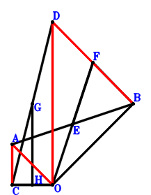
\(\because \) E is the midpoint of AB \(\therefore \small\overrightarrow{OE}=\dfrac{\small\overrightarrow{OA}}{2} + \dfrac{\small\overrightarrow{OB}}{2}\).\(\because \) E is the midpoint of FO \(\therefore \small\overrightarrow{OF}=2 \small\overrightarrow{OE}=\small\overrightarrow{OA} + \small\overrightarrow{OB}\).\(\because \) G is the midpoint of CD \(\therefore \small\overrightarrow{OG}=\dfrac{\small\overrightarrow{OC}}{2} + \dfrac{\small\overrightarrow{OD}}{2}\).\(\because \) H is the midpoint of CO \(\therefore \small\overrightarrow{OH}=\dfrac{\small\overrightarrow{OC}}{2}\).\(\because \) FB⊥BO \(\therefore \small\overrightarrow{BF} \cdot \small\overrightarrow{OB}=\small\overrightarrow{OB} \cdot \left(- \small\overrightarrow{OB} + \small\overrightarrow{OF}\right)=\small\overrightarrow{OA} \cdot \small\overrightarrow{OB}=0\) . . . . . . \(①\)\(\because \) CO⊥GH \(\therefore \small\overrightarrow{GH} \cdot \small\overrightarrow{OC}=\small\overrightarrow{OC} \cdot \left(- \small\overrightarrow{OG} + \small\overrightarrow{OH}\right)=- \dfrac{\small\overrightarrow{OC} \cdot \small\overrightarrow{OD}}{2}=0\) . . . . . . \(②\)In conclusion, \(\small\overrightarrow{BD} \cdot \small\overrightarrow{OA} - \small\overrightarrow{CA} \cdot \small\overrightarrow{OD}=\small\overrightarrow{OA} \cdot \left(- \small\overrightarrow{OB} + \small\overrightarrow{OD}\right) - \small\overrightarrow{OD} \cdot \left(\small\overrightarrow{OA} - \small\overrightarrow{OC}\right)=- \small\overrightarrow{OA} \cdot \small\overrightarrow{OB} + \small\overrightarrow{OC} \cdot \small\overrightarrow{OD}=-①-2\cdot②=0\)\(\because\) AC//DO and AO//DB \(\therefore\) \(AC·DO=AO·DB\).
Exercise 660： Let BEAO be a rectangle. G, F are the midpoints of CO, CD, respectively. CO⊥FG. Given that CA//DO and AO//BD, prove that \(CA·DO=AO·BD\).
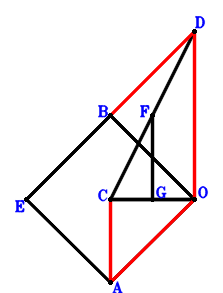
\(\because \) BEAO is a parallelogram \(\therefore \small\overrightarrow{OE}=\small\overrightarrow{OA} + \small\overrightarrow{OB}\).\(\because \) F is the midpoint of CD \(\therefore \small\overrightarrow{OF}=\dfrac{\small\overrightarrow{OC}}{2} + \dfrac{\small\overrightarrow{OD}}{2}\).\(\because \) G is the midpoint of CO \(\therefore \small\overrightarrow{OG}=\dfrac{\small\overrightarrow{OC}}{2}\).\(\because \) EB⊥BO \(\therefore \small\overrightarrow{BE} \cdot \small\overrightarrow{OB}=\small\overrightarrow{OB} \cdot \left(- \small\overrightarrow{OB} + \small\overrightarrow{OE}\right)=\small\overrightarrow{OA} \cdot \small\overrightarrow{OB}=0\) . . . . . . \(①\)\(\because \) CO⊥FG \(\therefore \small\overrightarrow{FG} \cdot \small\overrightarrow{OC}=\small\overrightarrow{OC} \cdot \left(- \small\overrightarrow{OF} + \small\overrightarrow{OG}\right)=- \dfrac{\small\overrightarrow{OC} \cdot \small\overrightarrow{OD}}{2}=0\) . . . . . . \(②\)In conclusion, \(\small\overrightarrow{BD} \cdot \small\overrightarrow{OA} - \small\overrightarrow{CA} \cdot \small\overrightarrow{OD}=\small\overrightarrow{OA} \cdot \left(- \small\overrightarrow{OB} + \small\overrightarrow{OD}\right) - \small\overrightarrow{OD} \cdot \left(\small\overrightarrow{OA} - \small\overrightarrow{OC}\right)=- \small\overrightarrow{OA} \cdot \small\overrightarrow{OB} + \small\overrightarrow{OC} \cdot \small\overrightarrow{OD}=-①-2\cdot②=0\)\(\because\) CA//DO and AO//BD \(\therefore\) \(CA·DO=AO·BD\).
Exercise 662： Let EDOC be a rectangle. AO⊥OB. Given that AC//DO and AO//DB, prove that \(AC·DO=AO·DB\).
Exercise 669： Let DCEO be a parallelogram. F, G are the midpoints of BO, BA, respectively. EC⊥CO and FG⊥BO. Given that CA//DO and OA//DB, prove that \(CA·DO=DB·OA\).
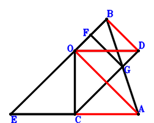
\(\because \) DCEO is a parallelogram \(\therefore \small\overrightarrow{OE}=\small\overrightarrow{OC} - \small\overrightarrow{OD}\).\(\because \) F is the midpoint of BO \(\therefore \small\overrightarrow{OF}=\dfrac{\small\overrightarrow{OB}}{2}\).\(\because \) G is the midpoint of BA \(\therefore \small\overrightarrow{OG}=\dfrac{\small\overrightarrow{OA}}{2} + \dfrac{\small\overrightarrow{OB}}{2}\).\(\because \) EC⊥CO \(\therefore \small\overrightarrow{CE} \cdot \small\overrightarrow{OC}=\small\overrightarrow{OC} \cdot \left(- \small\overrightarrow{OC} + \small\overrightarrow{OE}\right)=- \small\overrightarrow{OC} \cdot \small\overrightarrow{OD}=0\) . . . . . . \(①\)\(\because \) FG⊥BO \(\therefore \small\overrightarrow{FG} \cdot \small\overrightarrow{OB}=\small\overrightarrow{OB} \cdot \left(- \small\overrightarrow{OF} + \small\overrightarrow{OG}\right)=\dfrac{\small\overrightarrow{OA} \cdot \small\overrightarrow{OB}}{2}=0\) . . . . . . \(②\)In conclusion, \(\small\overrightarrow{BD} \cdot \small\overrightarrow{OA} - \small\overrightarrow{CA} \cdot \small\overrightarrow{OD}=\small\overrightarrow{OA} \cdot \left(- \small\overrightarrow{OB} + \small\overrightarrow{OD}\right) - \small\overrightarrow{OD} \cdot \left(\small\overrightarrow{OA} - \small\overrightarrow{OC}\right)=- \small\overrightarrow{OA} \cdot \small\overrightarrow{OB} + \small\overrightarrow{OC} \cdot \small\overrightarrow{OD}=-①-2\cdot②=0\)\(\because\) CA//DO and OA//DB \(\therefore\) \(CA·DO=DB·OA\).
Exercise 674： Let DOEC be a parallelogram. F is the midpoint of GO and BA. GB⊥BO and OC⊥CE. Given that AC//DO and AO//DB, prove that \(AC·DO=AO·DB\).
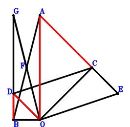
\(\because \) DOEC is a parallelogram \(\therefore \small\overrightarrow{OE}=\small\overrightarrow{OC} - \small\overrightarrow{OD}\).\(\because \) F is the midpoint of BA \(\therefore \small\overrightarrow{OF}=\dfrac{\small\overrightarrow{OA}}{2} + \dfrac{\small\overrightarrow{OB}}{2}\).\(\because \) F is the midpoint of GO \(\therefore \small\overrightarrow{OG}=2 \small\overrightarrow{OF}=\small\overrightarrow{OA} + \small\overrightarrow{OB}\).\(\because \) OC⊥CE \(\therefore \small\overrightarrow{CE} \cdot \small\overrightarrow{OC}=\small\overrightarrow{OC} \cdot \left(- \small\overrightarrow{OC} + \small\overrightarrow{OE}\right)=- \small\overrightarrow{OC} \cdot \small\overrightarrow{OD}=0\) . . . . . . \(①\)\(\because \) GB⊥BO \(\therefore \small\overrightarrow{BG} \cdot \small\overrightarrow{OB}=\small\overrightarrow{OB} \cdot \left(- \small\overrightarrow{OB} + \small\overrightarrow{OG}\right)=\small\overrightarrow{OA} \cdot \small\overrightarrow{OB}=0\) . . . . . . \(②\)In conclusion, \(\small\overrightarrow{BD} \cdot \small\overrightarrow{OA} - \small\overrightarrow{CA} \cdot \small\overrightarrow{OD}=\small\overrightarrow{OA} \cdot \left(- \small\overrightarrow{OB} + \small\overrightarrow{OD}\right) - \small\overrightarrow{OD} \cdot \left(\small\overrightarrow{OA} - \small\overrightarrow{OC}\right)=- \small\overrightarrow{OA} \cdot \small\overrightarrow{OB} + \small\overrightarrow{OC} \cdot \small\overrightarrow{OD}=-①-②=0\)\(\because\) AC//DO and AO//DB \(\therefore\) \(AC·DO=AO·DB\).
Exercise 675： Let DCEO and FBAO be parallelograms. OC⊥CE and FB⊥BO. Given that AC//DO and AO//DB, prove that \(AC·DO=AO·DB\).
Exercise 677： Let H, G be the midpoints of BA, BO, respectively. E is the midpoint of FO and CD. FC⊥CO and HG⊥BO. Given that CA//DO and AO//BD, prove that \(CA·DO=AO·BD\).
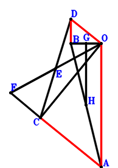
\(\because \) E is the midpoint of CD \(\therefore \small\overrightarrow{OE}=\dfrac{\small\overrightarrow{OC}}{2} + \dfrac{\small\overrightarrow{OD}}{2}\).\(\because \) E is the midpoint of FO \(\therefore \small\overrightarrow{OF}=2 \small\overrightarrow{OE}=\small\overrightarrow{OC} + \small\overrightarrow{OD}\).\(\because \) G is the midpoint of BO \(\therefore \small\overrightarrow{OG}=\dfrac{\small\overrightarrow{OB}}{2}\).\(\because \) H is the midpoint of BA \(\therefore \small\overrightarrow{OH}=\dfrac{\small\overrightarrow{OA}}{2} + \dfrac{\small\overrightarrow{OB}}{2}\).\(\because \) FC⊥CO \(\therefore \small\overrightarrow{FC} \cdot \small\overrightarrow{OC}=\small\overrightarrow{OC} \cdot \left(\small\overrightarrow{OC} - \small\overrightarrow{OF}\right)=- \small\overrightarrow{OC} \cdot \small\overrightarrow{OD}=0\) . . . . . . \(①\)\(\because \) HG⊥BO \(\therefore \small\overrightarrow{GH} \cdot \small\overrightarrow{OB}=\small\overrightarrow{OB} \cdot \left(- \small\overrightarrow{OG} + \small\overrightarrow{OH}\right)=\dfrac{\small\overrightarrow{OA} \cdot \small\overrightarrow{OB}}{2}=0\) . . . . . . \(②\)In conclusion, \(\small\overrightarrow{BD} \cdot \small\overrightarrow{OA} - \small\overrightarrow{CA} \cdot \small\overrightarrow{OD}=\small\overrightarrow{OA} \cdot \left(- \small\overrightarrow{OB} + \small\overrightarrow{OD}\right) - \small\overrightarrow{OD} \cdot \left(\small\overrightarrow{OA} - \small\overrightarrow{OC}\right)=- \small\overrightarrow{OA} \cdot \small\overrightarrow{OB} + \small\overrightarrow{OC} \cdot \small\overrightarrow{OD}=-①-2\cdot②=0\)\(\because\) CA//DO and AO//BD \(\therefore\) \(CA·DO=AO·BD\).
Exercise 680： Let E be the midpoint of FO and DC. G is the midpoint of BO and AH. FC⊥CO and HB⊥BO. Given that AC//DO and AO//DB, prove that \(AC·DO=AO·DB\).
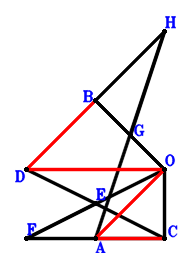
\(\because \) E is the midpoint of DC \(\therefore \small\overrightarrow{OE}=\dfrac{\small\overrightarrow{OC}}{2} + \dfrac{\small\overrightarrow{OD}}{2}\).\(\because \) E is the midpoint of FO \(\therefore \small\overrightarrow{OF}=2 \small\overrightarrow{OE}=\small\overrightarrow{OC} + \small\overrightarrow{OD}\).\(\because \) G is the midpoint of BO \(\therefore \small\overrightarrow{OG}=\dfrac{\small\overrightarrow{OB}}{2}\).\(\because \) G is the midpoint of AH \(\therefore \small\overrightarrow{OH}=- \small\overrightarrow{OA} + 2 \small\overrightarrow{OG}=- \small\overrightarrow{OA} + \small\overrightarrow{OB}\).\(\because \) FC⊥CO \(\therefore \small\overrightarrow{FC} \cdot \small\overrightarrow{OC}=\small\overrightarrow{OC} \cdot \left(\small\overrightarrow{OC} - \small\overrightarrow{OF}\right)=- \small\overrightarrow{OC} \cdot \small\overrightarrow{OD}=0\) . . . . . . \(①\)\(\because \) HB⊥BO \(\therefore \small\overrightarrow{HB} \cdot \small\overrightarrow{OB}=\small\overrightarrow{OB} \cdot \left(\small\overrightarrow{OB} - \small\overrightarrow{OH}\right)=\small\overrightarrow{OA} \cdot \small\overrightarrow{OB}=0\) . . . . . . \(②\)In conclusion, \(\small\overrightarrow{BD} \cdot \small\overrightarrow{OA} - \small\overrightarrow{CA} \cdot \small\overrightarrow{OD}=\small\overrightarrow{OA} \cdot \left(- \small\overrightarrow{OB} + \small\overrightarrow{OD}\right) - \small\overrightarrow{OD} \cdot \left(\small\overrightarrow{OA} - \small\overrightarrow{OC}\right)=- \small\overrightarrow{OA} \cdot \small\overrightarrow{OB} + \small\overrightarrow{OC} \cdot \small\overrightarrow{OD}=-①-②=0\)\(\because\) AC//DO and AO//DB \(\therefore\) \(AC·DO=AO·DB\).
Exercise 702： Let E be the midpoint of DF and CO. OC⊥CF and AO⊥OB. Given that AC//DO and AO//DB, prove that \(AC·DO=AO·DB\).
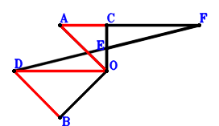
\(\because \) E is the midpoint of CO \(\therefore \small\overrightarrow{OE}=\dfrac{\small\overrightarrow{OC}}{2}\).\(\because \) E is the midpoint of DF \(\therefore \small\overrightarrow{OF}=- \small\overrightarrow{OD} + 2 \small\overrightarrow{OE}=\small\overrightarrow{OC} - \small\overrightarrow{OD}\).\(\because \) AO⊥OB \(\therefore \small\overrightarrow{OA} \cdot \small\overrightarrow{OB}=0\) . . . . . . \(①\)\(\because \) OC⊥CF \(\therefore \small\overrightarrow{CF} \cdot \small\overrightarrow{OC}=\small\overrightarrow{OC} \cdot \left(- \small\overrightarrow{OC} + \small\overrightarrow{OF}\right)=- \small\overrightarrow{OC} \cdot \small\overrightarrow{OD}=0\) . . . . . . \(②\)In conclusion, \(\small\overrightarrow{BD} \cdot \small\overrightarrow{OA} - \small\overrightarrow{CA} \cdot \small\overrightarrow{OD}=\small\overrightarrow{OA} \cdot \left(- \small\overrightarrow{OB} + \small\overrightarrow{OD}\right) - \small\overrightarrow{OD} \cdot \left(\small\overrightarrow{OA} - \small\overrightarrow{OC}\right)=- \small\overrightarrow{OA} \cdot \small\overrightarrow{OB} + \small\overrightarrow{OC} \cdot \small\overrightarrow{OD}=-①-②=0\)\(\because\) AC//DO and AO//DB \(\therefore\) \(AC·DO=AO·DB\).
Exercise 708： Let BGAO be a rectangle. E is the midpoint of OC and DF. OC⊥CF. Given that AC//DO and AO//DB, prove that \(AC·DO=AO·DB\).
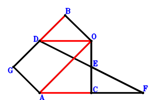
\(\because \) E is the midpoint of OC \(\therefore \small\overrightarrow{OE}=\dfrac{\small\overrightarrow{OC}}{2}\).\(\because \) E is the midpoint of DF \(\therefore \small\overrightarrow{OF}=- \small\overrightarrow{OD} + 2 \small\overrightarrow{OE}=\small\overrightarrow{OC} - \small\overrightarrow{OD}\).\(\because \) BGAO is a parallelogram \(\therefore \small\overrightarrow{OG}=\small\overrightarrow{OA} + \small\overrightarrow{OB}\).\(\because \) OC⊥CF \(\therefore \small\overrightarrow{CF} \cdot \small\overrightarrow{OC}=\small\overrightarrow{OC} \cdot \left(- \small\overrightarrow{OC} + \small\overrightarrow{OF}\right)=- \small\overrightarrow{OC} \cdot \small\overrightarrow{OD}=0\) . . . . . . \(①\)\(\because \) GB⊥BO \(\therefore \small\overrightarrow{BG} \cdot \small\overrightarrow{OB}=\small\overrightarrow{OB} \cdot \left(- \small\overrightarrow{OB} + \small\overrightarrow{OG}\right)=\small\overrightarrow{OA} \cdot \small\overrightarrow{OB}=0\) . . . . . . \(②\)In conclusion, \(\small\overrightarrow{BD} \cdot \small\overrightarrow{OA} - \small\overrightarrow{CA} \cdot \small\overrightarrow{OD}=\small\overrightarrow{OA} \cdot \left(- \small\overrightarrow{OB} + \small\overrightarrow{OD}\right) - \small\overrightarrow{OD} \cdot \left(\small\overrightarrow{OA} - \small\overrightarrow{OC}\right)=- \small\overrightarrow{OA} \cdot \small\overrightarrow{OB} + \small\overrightarrow{OC} \cdot \small\overrightarrow{OD}=-①-②=0\)\(\because\) AC//DO and AO//DB \(\therefore\) \(AC·DO=AO·DB\).
Exercise 709： Let F, E be the midpoints of BA, BO, respectively. DO⊥OC and EF⊥BO. Given that CA//DO and OA//DB, prove that \(CA·DO=DB·OA\).
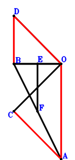
\(\because \) E is the midpoint of BO \(\therefore \small\overrightarrow{OE}=\dfrac{\small\overrightarrow{OB}}{2}\).\(\because \) F is the midpoint of BA \(\therefore \small\overrightarrow{OF}=\dfrac{\small\overrightarrow{OA}}{2} + \dfrac{\small\overrightarrow{OB}}{2}\).\(\because \) DO⊥OC \(\therefore - \small\overrightarrow{OC} \cdot \small\overrightarrow{OD}=0\) . . . . . . \(①\)\(\because \) EF⊥BO \(\therefore \small\overrightarrow{EF} \cdot \small\overrightarrow{OB}=\small\overrightarrow{OB} \cdot \left(- \small\overrightarrow{OE} + \small\overrightarrow{OF}\right)=\dfrac{\small\overrightarrow{OA} \cdot \small\overrightarrow{OB}}{2}=0\) . . . . . . \(②\)In conclusion, \(\small\overrightarrow{BD} \cdot \small\overrightarrow{OA} - \small\overrightarrow{CA} \cdot \small\overrightarrow{OD}=\small\overrightarrow{OA} \cdot \left(- \small\overrightarrow{OB} + \small\overrightarrow{OD}\right) - \small\overrightarrow{OD} \cdot \left(\small\overrightarrow{OA} - \small\overrightarrow{OC}\right)=- \small\overrightarrow{OA} \cdot \small\overrightarrow{OB} + \small\overrightarrow{OC} \cdot \small\overrightarrow{OD}=-①-2\cdot②=0\)\(\because\) CA//DO and OA//DB \(\therefore\) \(CA·DO=DB·OA\).
Exercise 776： Let ABEO be a parallelogram. AO⊥DB, OB⊥BE and DC⊥CO. Given that CA//DO, prove that \(CO^{2}=CA \cdot DO\).
Exercise 869： Let AO⊥DB and AC⊥DO. D, C, O are collinear and \(BO^{2}=CO \cdot DC\). Given that A, B, O are collinear, prove that \(CO^{2}=AB \cdot BO\).